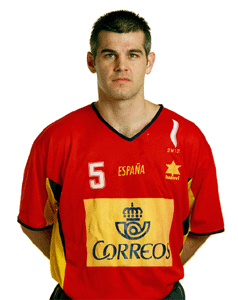
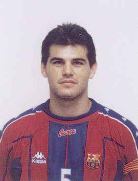

Inicio
Clubes

Se formó en la cantera del Granollers, y debutó con 18 años en Primera División. Estuvo con los vallesanos tres temporadas, y a la tercera intentona azulgrana aceptó la oferta de Valero Rivera para jugar en el Barcelona, de 1990 a 2004, catorce temporadas en las que ganó todos los títulos de club posibles: seis Copas de Europa ("creo que me faltan tres más, pero al final Valero Rivera empezó a hacer retoques en un equipo que estaba hecho, y que era impresionante, y más que reforzarnos, reforzamos a los rivales, al Portland, al Ciudad Real, por ejemplo"), Recopas, EHF, más siete ligas (una cada dos años, sería el balance) y cinco Copas del Rey.
Javier García Cuesta le hizo debutar con la Selección absoluta de España en 1989. Aquel año había logrado el subcampeonato del Mundo júnior con España, donde se encontró con otro central mítico con el que iba a coincidir como rival y como compañero (en la Selección) durante toda su carrera deportiva: Talant Dujsebaev, que hasta jugó de extremo en aquella selección soviética. Con España jugó 205 partidos internacionales en catorce años, con una aportación de 656 goles, con dos participaciones olímpicas (faltó a la cita de Atlanta por lesión), y tiene un bronce y medio olímpico en su casa. El medio, la parte de la cruz, se la regaló su amigo y compañero Mateo Garralda, otro de los jugadores con los que ha hecho media vida: desde la Selección juvenil, hasta los años en el Granollers, y luego en el Barcelona. El caso es que Mateo le prometió a Enric que si ganaban alguna medalla en Atlanta, la mitad sería suya. Dicho y hecho. Garralda cumplió la promesa, y gracias a un orfebre de Barcelona la serró en dos. Un buen día se presentó en el entrenamiento en el Palau con una bolsa de plástico de supermercado, y dentro iba la promesa. Cuatro años después, en Sydney, sí estuvo Enric, como en Barcelona 92, que tuvo la deferencia de regalarle a Urdangarín el último gol de su carrera: un penalti con el que se retiraba.
Clubes Nacional Liga ASOBAL (7): 1990/91, 1991/92, 1995/96, 1996/97, 1997/98, 1998/99, 1999/2000. Copa de SM el Rey (5): 1992/93, 1993/94, 1996/97, 1997/98, 1999/2000. Copa ASOBAL (5): 1994/95, 1995/96, 1999/2000, 2000/01, 2001/02. Supercopa de España (5): 1990/91, 1991/92, 1993/94, 1996/97, 1997/98.
Internacional Copa de Europa (6): 1990/91, 1995/96, 1996/97, 1997/98, 1998/99, 1999/2000. Recopa de Europa (2): 1993/94, 1994/95. Copa EHF (1): 2002/03. Supercopa de Europa (5): 1996/97, 1997/98, 1998/99, 1999/2000, 2003/04. Liga de los Pirineos (6): 1997, 1998, 1999, 2000, 2001, 2003.
Distinciones individuales Mejor Lateral Izquierdo de la Liga ASOBAL (1): 2003 Mejor Lateral Izquierdo del Mundial (1): 2003 Medalla de Plata - Real Orden del Mérito Deportivo: 200614 Insignia de Oro y Brillantes de la Real Federación Española de Balonmano: 2009
